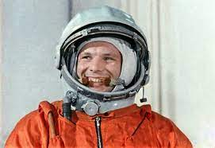

День космонавтики |
12 Апреля - день космонавтикиОписаниеДень космонавтики — отмечаемая сначала в СССР, а после в России и других странах постсоветского пространства 12 апреля дата, установленная в ознаменование первого полёта человека в космос. Описание полета На корабле «Восток» 12 апреля 1961 года лётчик-космонавт СССР Юрий Алексеевич Гагарин совершил первый в мире пилотируемый полёт в космическое пространство. Старт корабля состоялся с советского космодрома «Байконур» в 9 часов 7 минут по московскому времени (06:07:00 UTC). |
Меню |
| Все права защищены (c) 2022 |